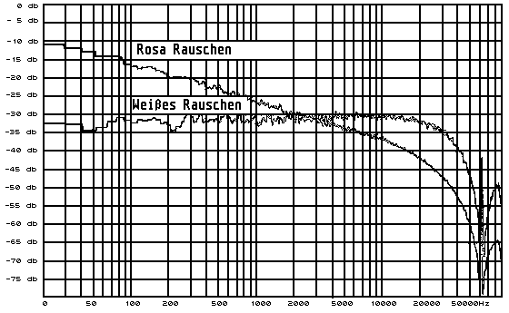

Previous
Next
TOC
Rosa Rauschen
Mit dem Rosa Rauschen kann man gut die Raumakustik überprüfen, ob
etwa die Beeinträchtigung der Klangabstrahlung der Lautsprecher
durch Möbelstücke oder Vorhänge gestört wird.
Frequenzgang:
20Hz bei -10db über ca. 2,8KHz bei -30db über 20KHz bei -45db
Weißes Rauschen
Mit dem Weißen Rauschen kann man gut die Funktion der Klangsteller
und oder der gehörrichtigen Position des Lautstärkestellers über-
prüfen.
Frequenzgang:
20Hz bei -32db über ca. 2,8KHz bei -30db über 20KHz bei -32db

Kapitel Dynamiktabelle für digitalisierte Analogsignale, Seite 2